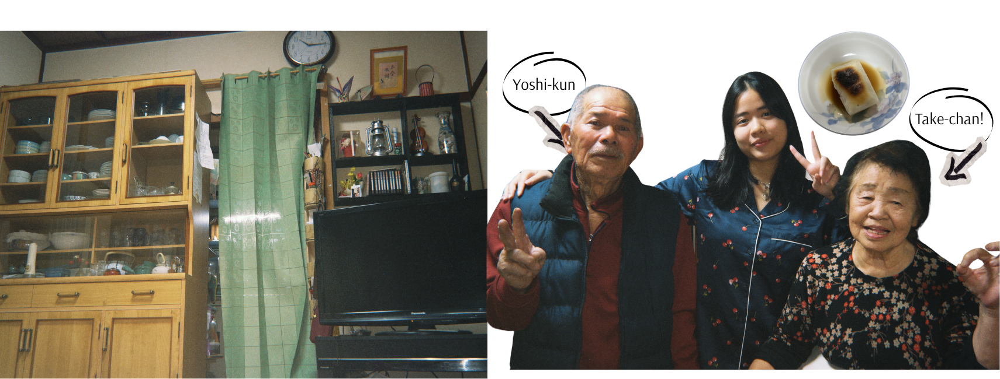
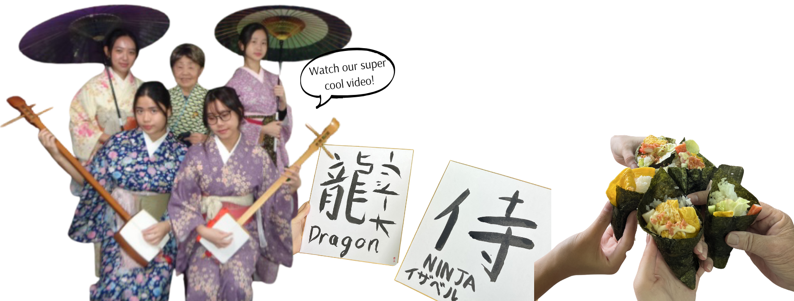
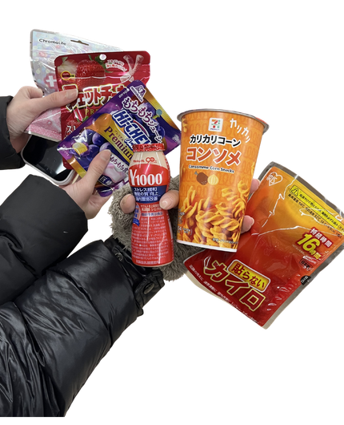
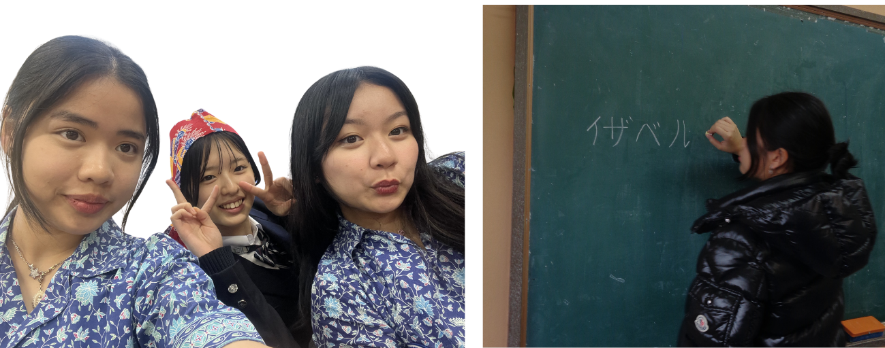
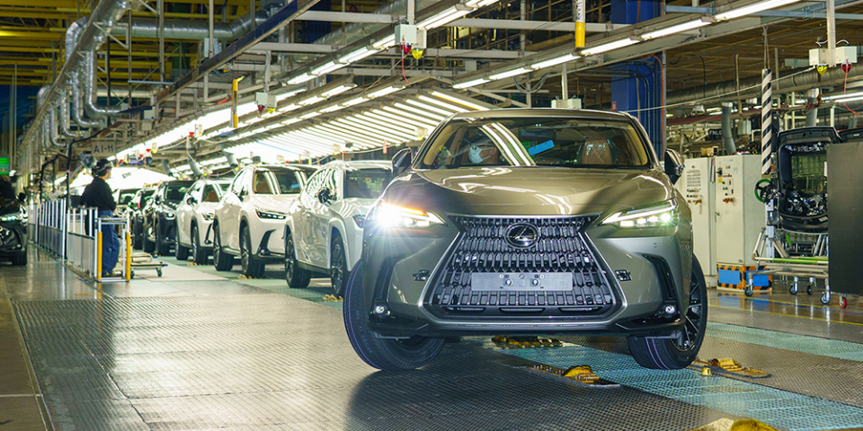

During our homestay experience in Kagoshima, we stayed with a kind grandma and grandpa who welcomed us so warmly into their home. They shared many parts of their culture with us, such as relaxing in a traditional Onsen, learning how to make Sushi, trying on beautiful Kimonos, and practicing writing Kanji. One of the most special parts was tasting the grandma’s delicious home-cooked meals, which made the experience feel even more like being part of their family. They were both incredibly welcoming and sweet, and by the time it was time to leave, we had grown so attached that we cried. We are forever grateful to have experienced this, and hope that one day we get to visit them again.


During our visit to Komazawa High School, we had a very fun and memorable cultural exchange experience. We spent time playing games with the students, trying a variety of Japanese snacks, and learning about traditional activities at the school. One of the most exciting parts was experiencing Judo and Kendo, where we were introduced to the basic techniques and discipline behind these sports. The students were very friendly and welcoming, which made the experience enjoyable and helped us learn more about Japanese school life and culture.


During our visit to the Toyota Motor Corporation factory in Japan, we had the opportunity to see how cars are produced using advanced technology and precise engineering. We observed parts of the production process, including automated machines and assembly lines that help build vehicles efficiently and accurately. The visit helped us understand the innovation and teamwork involved in manufacturing automobiles, and it was impressive to see how one of the world’s leading car companies operates behind the scenes.